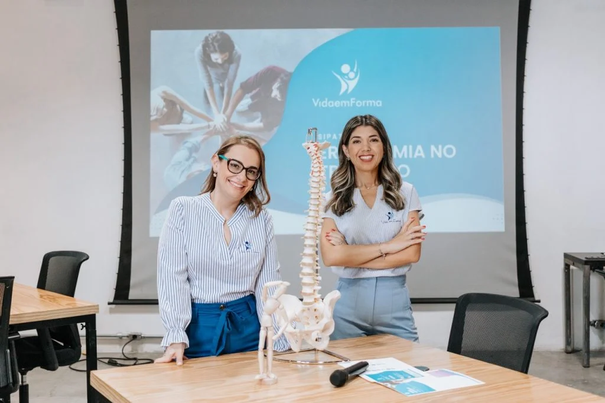

Uma SIPAT que informa, envolve e fica na memória.
Criamos programações personalizadas para transformar temas de saúde e segurança em experiências participativas, leves e relevantes para os colaboradores.
Monte uma programação que combine conteúdo e participação.
Além de palestras, a SIPAT pode receber intervenções, experiências rápidas e ações de saúde distribuídas ao longo da semana.
Palestras
Temas escolhidos de acordo com a campanha, o público e os desafios da organização.
Espaço Zen e Massagem
Ambiente de acolhimento e relaxamento para criar uma pausa de cuidado durante o evento.
Ginástica Motivacional
Aulas dinâmicas com recursos diferenciados para aumentar participação e energia.
Estação Coluna
Orientações interativas sobre postura, ergonomia e autocuidado com a coluna.
Blitz Postural
Profissionais percorrem os postos de trabalho observando postura e orientando colaboradores.
Circuito da Saúde
Experiência com avaliações e orientações que pode reunir saúde corporal e postural.
Não precisa ser só uma semana no calendário.
A mesma lógica de programação pode apoiar Semana da Saúde, Setembro Amarelo, Outubro Rosa, Novembro Azul e outras campanhas internas.

Quer transformar saúde e bem-estar em uma experiência que engaja?
Conte sua necessidade. A Vida em Forma prepara uma proposta personalizada para o perfil da sua empresa, seu público e seu calendário.